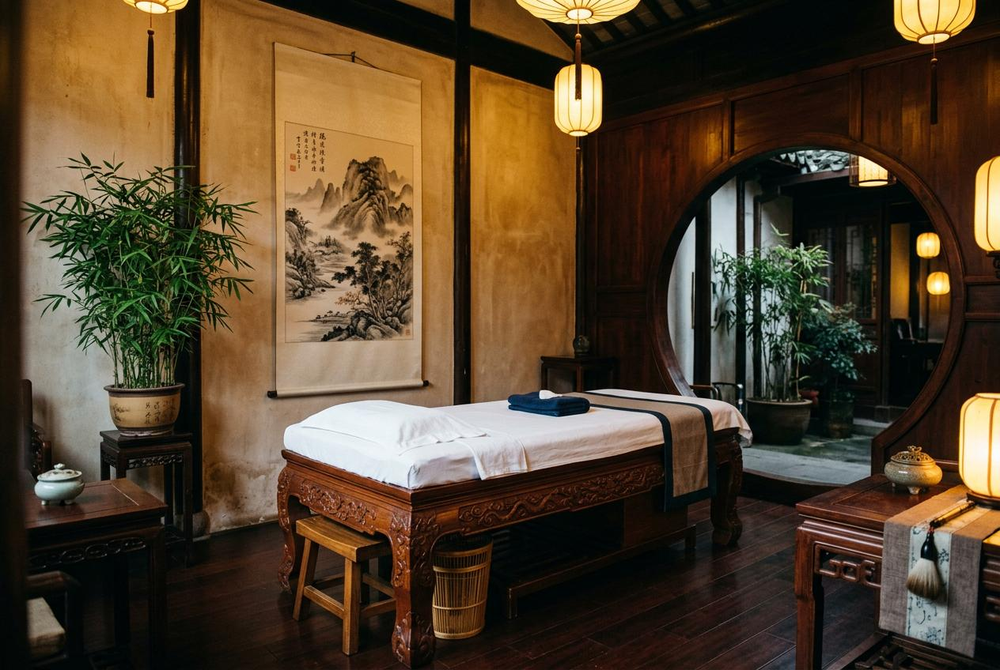

在台北男士按摩的選擇眾多，從傳統養生館到現代會館，各有不同的服務特色與價位。對於初次接觸或想換新店家的人來說，常常不清楚如何挑選。本文整理4個重點，幫助你從服務內容、價格區間到預約方式，找到符合需求的選項。
為什麼男士會選擇按摩服務？
從民俗調理的傳統觀念來看，身體的保養向來被視為維持日常狀態的重要環節。傳統認為透過外力協助放鬆緊繃部位，能讓氣行順暢、減少身體的負擔感。這種源自生活經驗的身體保養觀念，在現代轉化為按摩服務的需求。台北許多上班族長時間維持固定姿勢，肌肉累積緊繃感，因此會定期安排按摩作為日常保養。
台北男士按摩常見服務項目
以下列出四類常見服務項目，可依個人狀態選擇：
- 肩頸按摩：針對肩頸部位的深層按壓，適合長時間使用電腦、低頭看手機的族群，緩解上背部僵硬的感受。
- 全身肌肉按摩：涵蓋背、腰、腿等主要肌群，透過系統性的手法讓全身緊繃感降低，適合希望整體保養的人。
- 運動後肌肉按摩：針對運動後特定肌群的處理，例如腿部、手臂等部位，幫助運動後的身體回復較佳狀態。
- 久坐族肩背按摩：專為辦公室族群設計，重點處理肩胛骨周圍與下背部的緊繃，改善因久坐產生的不適感。
台北男士按摩服務流程怎麼安排？
預約按摩服務的流程可分為五個步驟：
- 確認需求：先評估自己當天的身體狀態，是想針對特定部位處理，還是希望做整體性的保養。
- 選擇服務項目：根據需求挑選對應的按摩類型，並決定施作的時間長度。
- 預約時段：透過電話或線上管道預約，建議提前確認當天是否還有空檔，熱門時段往往需要提早安排。
- 前往會館或確認到府地址：若選擇門市服務，提前規劃交通路線；若選擇到府服務，確認地址與環境空間是否適合施作。
- 施作後回饋：按摩過程中可隨時與師傅溝通力道，施作後給予回饋，有助於下次獲得更貼近需求的服務體驗。
台北男士按摩價格通常怎麼看？
台北男士按摩的價格會因服務項目、施作時間、師傅經驗等因素有所差異。一般來說，單部位處理價位較低，全身性服務則需要較高預算。建議在預約前先確認價目內容，避免現場產生認知落差。
| 服務項目 | 時間 | 價格區間 | 備註 |
|---|---|---|---|
| 肩頸按摩 | 30-40 分鐘 | $1,200 - $1,800 | 適合時間有限的上班族 |
| 全身肌肉按摩 | 60-90 分鐘 | $2,500 - $4,000 | 涵蓋主要肌群，施作時間較長 |
| 運動後肌肉按摩 | 40-60 分鐘 | $1,800 - $2,800 | 針對運動後特定肌群加強處理 |
| 久坐族肩背按摩 | 40-50 分鐘 | $1,500 - $2,200 | 聚焦肩背區域，緩解久坐不適 |

台北男士按摩推薦怎麼選？
挑選按摩服務時，可從以下面向評估：
- 師傅經驗：優先選擇有豐富實務經驗的師傅，能依據個人狀態調整手法與力道。
- 環境衛生：會館的清潔程度、毛巾是否乾淨、空間是否有妥善維護，都是觀察重點。
- 價格說明：選擇在預約前就能明確告知價格的店家，減少現場的溝通成本與預期落差。
- 顧客回饋：參考其他顧客的體驗分享，了解服務品質的穩定性。
到府按摩與門市按摩有什麼差別？
兩種服務形式各有適用情境：
- 到府按摩：師傅攜帶必要設備前往顧客指定的地點，適合時間有限、不方便外出，或希望在家中休息的顧客。需自行準備足夠的施作空間。
- 門市按摩：前往會館接受服務，環境設備通常較為完善，包括專用的按摩床、燈光與氛圍營造。適合重視空間氛圍、希望完整體驗的顧客。
選擇時可依據當天的行程安排與個人偏好決定，兩種方式在服務內容上並無差異。
預約前需要注意哪些事項？
為讓按摩體驗更順暢，建議在預約前留意以下幾點：
- 施作前不宜過飽或空腹，建議在餐後一小時再進行按摩。
- 若有皮膚外傷或發炎情況，應暫緩預約，待恢復後再安排。
- 提前告知師傅身體的敏感部位或曾有的舊傷，讓師傅調整手法。
- 確認會館的營業時間與取消政策，避免臨時變動產生費用。
- 攜帶寬鬆衣物或確認會館是否有提供更衣空間與衣物。
選擇按摩服務的重點整理
本文從民俗調理的傳統觀念談起，說明台北男士按摩的常見服務項目、價格區間與預約流程。無論是肩頸按摩還是全身肌肉按摩，重點都在於找到符合個人需求的選項。建議在預約前多做比較，確認價格與服務內容後再決定。如果你想找經驗豐富的師傅，金手指按摩在台北提供多種按摩服務，環境乾淨且價格明確，歡迎參考。
常見問題
台北男士按摩需要提前多久預約？ ▼
建議提前1至3天預約，若是週末或傍晚的熱門時段，建議提前一週安排，以確保能約到理想的時段。
按摩過程中力道太強可以調整嗎？ ▼
可以。專業師傅會在過程中詢問力道是否適中，顧客也可隨時提出調整需求，良好溝通是獲得理想體驗的關鍵。
到府按摩需要準備什麼？ ▼
顧客需準備足夠的施作空間，建議預留2坪以上區域。師傅通常會攜帶按摩床與用品，但可提前確認是否需額外準備毛巾等物品。
價格是否包含所有費用，還會有額外加價嗎？ ▼
有口碑的店家會在預約時清楚說明價格內容，建議事先詢問是否有額外的服務費或到府車馬費，避免現場產生誤會。
多久做一次按摩比較適合？ ▼
視個人身體狀態而定。一般上班族建議每2至4週進行一次保養；若有運動習慣或姿勢不良，可視緊繃程度縮短為每週一次。
標籤： 台北男士按摩台北男士按摩價格按摩服務項目按摩預約按摩重點